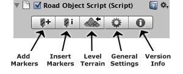

|
EasyRoads3D V3 Manual | |
Creating Roads
Select New EasyRoads3D Object from the EasyRoads3D Menu. A dialog window will appear where you can name the new road object. After clicking the Create Object button the new road object will be added to the hierarchy panel as a child of the main EasyRoads3D Roads game object. In the property Inspector you will see the EasyRoads3D toolbar:  Once you have created your first road object you can also create new road objects by clicking the most left button in the Inspector of the main EasyRoads3D Roads game object.
Add road markers by activating the Add Markers toolbar tab. Move the mouse to the position where you want the road to start and click the left mouse button while holding the [shift] key. Continue adding markers according the shape of the desired road. You will see that the road system will create surfaces representing the road and the affected surrounding which are configurable in General Settings.
Insert road markers works similar as adding road markers but instead of adding the marker at the end of the road, it will insert the marker between the 2 closest markers to the mouse position. Make sure you are in Insert Markers mode by activating the Insert Markers toolbar tab and click on a road segment to actually insert a marker!
Click on one of the generated surfaces to change its properties. Soft Selection: When enabled for the selected marker all other markers within the entered soft selection distance will be affected to an extend as the distance to the selected marker. Left/Right Indent. Use this feature to increase the distance between the road and the edge where the terrain has the same height as the road. This is useful in hilly areas to avoid the terrain break through the road because of the Unity terrain LOD system.
Left/Right Surrounding: This represents the distance used to level the area between the road and the current terrain height. This property gives you full control over the area around the road, especially in hilly areas.
Left/Right Tilting. This feature will lift the road up to a maximum of the road width minus 1 meter. You will get the best results when used together with the soft selection tool so the tilting affects all road surfaces in a bended road. Refresh Surfaces (). By default the road surfaces will be updated instantly after changing one of the above settings. However when Auto Updates in General Settings is toggled off this will not be the case. Click the Refresh Surface button to update the surfaces manually. Delete Road Marker. Clicking this button will remove the selected road marker.
Bridge Object: Activate this toggle to create bridges. The terrain will not be deformed while the road geometry will still follow the marker positions. Distribute Heights: This toggle is associated with bridge objects. Activating it will distribute the road surface heights evenly from the previous marker position to the terrain height at the selected marker position. This feature is useful to create realistic viaducts. Simply select a marker, make sure the road surface area between this marker and the previous marker is raised above the ground and check "Bridge Object". You will see that the white surfaces disappear. This means that the terrain will not be adjusted for this part of the road. Alternatively you can check "Distribute Heights" which will gradually lower the terrain from the previous marker to the terrain height at the selected marker. The shape will be visually represented by the white surfaces. A bridge with distributed heights enabled, consists of at least 3 markers:
Start New LOD Segment (Full version & Pro only): In EasyRoads3d v2 you can create and save your road geometry in different LOD segments. Simply check this checkbox when you want to start a new road LOD segment at the selected marker. When rendering the road object you will see that the road asset in the hierarchy now has a number of child assets matching the number of LOD segments. Exporting the road geometry will save each segment in its own group. To create the geometry for your LOD system, export the road with a high resolution, rename the files, switch to a lower resolution and again save the road.
Additional Marker Function When two markers are selected you will see the below buttons in the Inspector:
SIDE OBJECT MARKER PROPERTIES (Full version & Pro only) By default markers cannot be accessed when road objects are in render mode (see just below). However when side objects have been built in render mode you will see that the marker objects appear again. By selecting a marker you can adjust the side object settings for this marker for any of the available side objects. Depending on the type of side object you will see the following properties: Selected Object: this is a combobox with all available side objects. Select the side object from the list you want to edit. Display Object: Toggle this on/off when you want to render the selected side object for the selected marker. Spline Node: Toggle this respectively on/off when you want to use this marker for the spline shape. The road scene in the demo project uses this feature for the "Right Fence" in the sharp corner. It cuts of a large part of the road shape. This allows you to create shapes that run independently from the actual road shape. Distance Sideways: This allows you to move the spline path for the selected side object away from the road shape.
One of the main features of EasyRoads3D is adjusting the terrain to the shape of the road. Optionally you can also embed the shape of the road in the terrain splatmap with controls to expand or smoothen the shape. Click the Level Terrain tab on the toolbar to level the terrain according to the created road and road surrounding surfaces. Depending on the resolution of the terrain and the size of the road this may take a while. Click the Level Terrain Tab again to switch back to "Edit Mode" and continue adding markers or tweaking markers settings (Full version & Pro only). Clicking the Terrain tab from the marker toolbar will select the main road object first. In this case, click this tab again to activate the terrain rendering. NOTE: If you save a scene while an EasyRoads3D objects is in "Render" state and then close Unity, these objects will automatically switch back to edit mode after reopening the scene. This is to make sure the EasyRoads3D object is correctly initialized on startup and also to ensure that the original terrain data is preserved. It is therefor recommended to save your scenes with all EasyRoads3D objects in edit mode. After leveling is finished the following properties will appear in the Inspector Panel: Render: When this property is toggled on, terrain matching road geometry will be created. Material (Full version & Pro only): This will display the current road texture. Click on the texture to open the Road Texture Window. This will display all available road textures in the folder: /Assets/EasyRoads3D/Textures/Road Textures. You can add your own textures in this folder if you like to use this system. Below each texture you will see the supported shaders for this texture. Currently supported shaders are: Diffuse, Bumped Diffuse and Bumped Specular. The name convention is: texturename_d for the diffuse texture and texturename_b for the bumped texture. When the window opens the specific folder will be scanned and matching materials will be added to the combobox accordingly. The folder /Assets/EasyRoads3D/Shaders/ contains 6 different depth offset shaders to make sure the road is rendered on top of the terrain. When using a low Field of View on the camera you may still encounter some z-fighting. In this case open the respective shader and tweak the two Offset factor and unit parameters (just below LOD) further downwards. NOTE: Currently all road objects in a project use the same material. Changing the material on one of them will change the material on all other road objects. In the next release this will be handled per road object individually. Meanwhile you can manually add materials if you like to use different materials per road. Road Segments (Full version & Pro only): The number of segments over the width of the road. When this number is larger then 1 you will see the following new properties:
Resolution. This represents the geometry resolution of the road. UVMapping. This allows you to control the texture mapping on the road. Raise (cm).Represents how much the geometry is positioned above the terrain. On relatively flat surface 2 cm should be fine. Below 2 cm some terrain adjusting is necessary using the unity terrain tools at specific spots. Save Geometry (Full version & Pro only). This will create a .obj file of the road geometry with the name of the road object saved in the folder project/EasyRoads3D/[roadname]/. NOTE: When exporting the terrain the geometry will match the position of the resolution slider! NOTE: The road object created by EasyRoads3D includes uv2 coordinates matching the terrain boundaries. This will allow you to use the terrain lightmap on the road. Simply choose a lightmapped shader for the road material and drag the terrain lightmap in the lightmap slot of this shader.
EasyRoads3D can embed the shape of the road in the terrain splatmap. Apply Splatmap. When toggled on the road shape will be included in the terrain splatmap. You will have access to a number of splatmap properties. Terrain texture. Select the terrain texture you like to use for the road shape. The splatmap features support terrains with up to 8 textures (2 splatmaps). Expand Width: This will make the road shape wider. The actual sizes depends on the Control Texture Resolution of your terrain. Smooth Level. This will smoothen the edges of the road splatmap slightly. Better results can be achieved in your paint program especially when you use a resolution of 512 or lower. The smoothing algorithm will be improved in next updates. You can find the raw road splatmap in the folder: project folder > EasyRoads3D > [road name] > roadSplatMap.png. You may edit it in your paint program and merge it with the terrain splatmaps. Offset x/ Offset y. Especially when the Control Texture Resolution is low compared to the size of the terrain the road shape on the splatmap can be slightly out of position compared to the road geometry. Changing the Offset parameters may give better results. Alternatively and recommended, reposition markers to better match the terrain splatmap resolution or increase the Control Texture Resolution of the terrain. Opacity. Controls the blend level of the road splatmap with the rest of the terrain. Apply Changes. Click this button to apply changes made to above settings.
SMOOTH EDGES This will smoothen the terrain near the indent edges to the left and right over the distance set in Distance (m). Click the "Smooth Edges" button to apply the smoothing.
SMOOTH SURROUNDING This will smoothen the terrain near the surrounding edges to the left and right over the distance set in Distance (m). Click the "Smooth Surrounding" button to apply the smoothing. SIDE OBJECT SETTINGS (Full version & Pro only) When this road object has active side objects you will see a button "Built Side Objects". Click this button to create / remove the side objects. Note: Click the "Terrain" tab once again (or any other toolbar tab) to switch back to edit mode.
- The general road settings are displayed in this toolbar item
NOTE: EasyRoads3D uses layers 29, 30 and 31. Make sure other game objects in the scene are not on one of these layers to avoid unexpected behaviour!
Customized Road Shape to Terrain Splatmap The road shape is saved in the folder [your project]/EasyRoads3D/[Road Object Name]/roadSplatMap.png You can open this in your paint program to customize the splatmap. To embed the customized shape in the terrain, select Main Menu > To add it to the terrain select Main menu > EasyRoads3D> Restore > Terrain Splatmap data. You will be asked if you would like to merge the terrain splatmap backups with a road splatmap. Click yes and select the customized texture. NOTE: Photoshop users, it is recommended to use "Save for web..." to save the png. If you save the image using "Save as...", be sure to select the png format. Do not simply select the already existing file in your folder as this will probably NOT import well in Unity. NOTE: DO NOT use the splatmap features if you are using more then 8 textures on your terrain!
The road geometry exported from EasyRoads3D contains vertex info, face info and one set of UV coordinates. You will have to apply normal info in your modeling application. If you exported the geometry with terrain lightmap support you will see 4 corner faces. Select all road faces and corner faces and use a planar type of uvmapping on the second channel. Save or export to .fbx. In Unity make sure that the import setting for size is 1. Choose a lightmap supported shader on your road asset and drag the terrain lightmap to the shaders lightmap slot. Drag the asset to your scene go to the EasyRoads3D menu and select "Position Road", browse to the EasyRoads3D terrain export file and select it. The road will be positioned correctly. Depending on your modeling application and/or the export settings you used to export the road, it could be that you have to rotate the object on 1 or more axis. The "Position Road" editor script has some commented code in it that can take care of this automatically once you figured out the correct settings for your case. Just uncomment the lines and fill in the correct values.
|
||||||||||||||||||||||